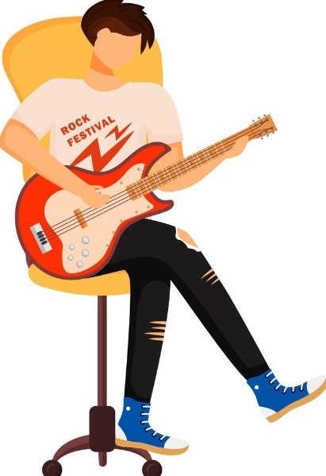
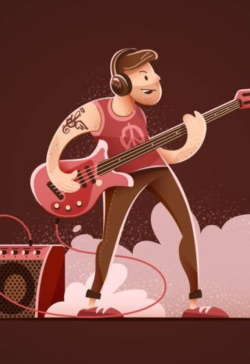

Sobre Nosotros
Unete a la mayor comunidad musical de tu localidad
Bienvenido a nuestra comunidad musical, un espacio donde la importancia de la conexión entre músicos cobra vida. Nacimos con la firme creencia de que la colaboración y la unión de talentos no solo fortalecen a los artistas individuales, sino que también enriquecen la experiencia musical para todos. En el tejido de nuestra comunidad, reconocemos que cada músico tiene una voz única, pero juntos creamos armonías que resuenan más fuerte y llegan más lejos. La importancia de este lugar radica en el poder de compartir, aprender y crecer colectivamente. Nuestra comunidad musical no solo se trata de formar bandas y colaborar en proyectos emocionantes, sino de construir una red sólida donde las oportunidades florecen, y donde cada nota y cada acorde contribuyen a la riqueza de nuestra experiencia musical compartida. Nacimos para proporcionar un refugio donde la pasión por la música se fusiona con la camaradería, donde los músicos jóvenes pueden encontrar apoyo, inspiración y un público genuinamente apasionado. Al unirte, no solo te unes a una comunidad, te sumerges en una experiencia donde cada miembro contribuye a algo más grande que ellos mismos. Así que, ¿por qué nacimos? Nacimos para celebrar la música en su máxima expresión, para crear una sinfonía de talentos entrelazados y para ofrecer un espacio donde cada nota cuenta una historia de conexión y creatividad. Únete a nosotros y sé parte de esta melodía única que estamos componiendo juntos. ¡Bienvenido a nuestra comunidad musical! 🎶✨

